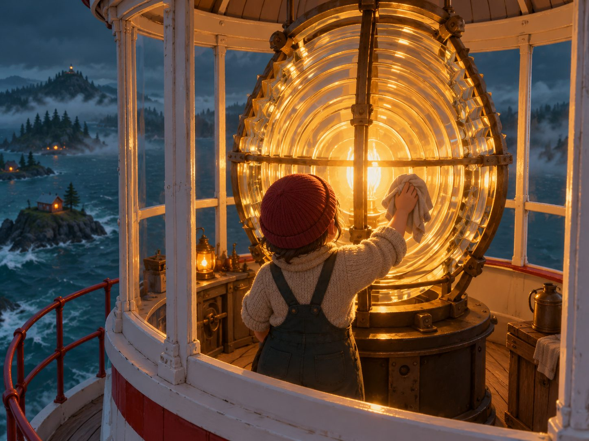

Keeper’s log
Wick trimmed.
Glass polished, both sides.
Lit at dusk.
I · The lamp
Trim the lamp. The whole island depends on it.
Before dark the wick wants trimming and the great glass wants a polish. It’s small, steady work, done by hand at the top of the tower.
- Trim the wick
- Polish the lens
- Light up at dusk